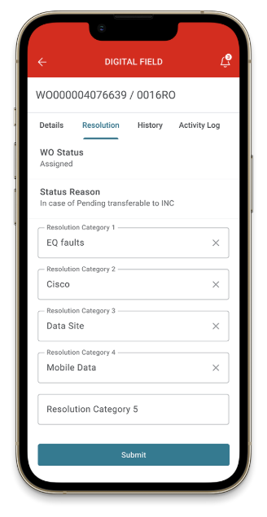
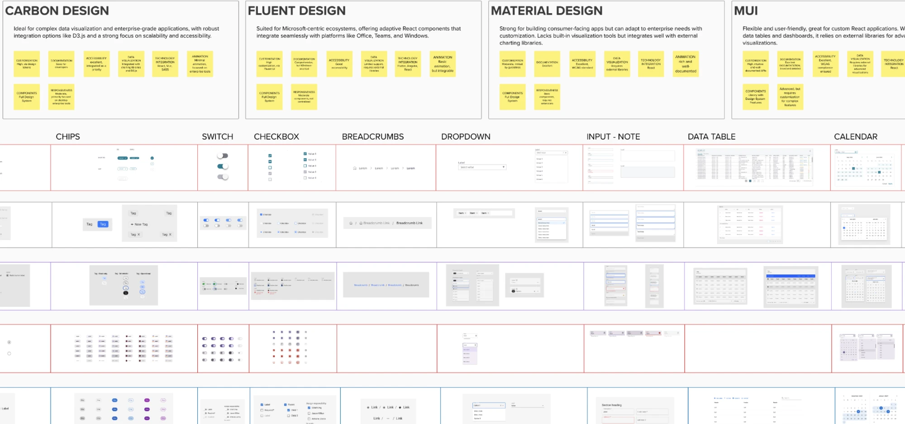
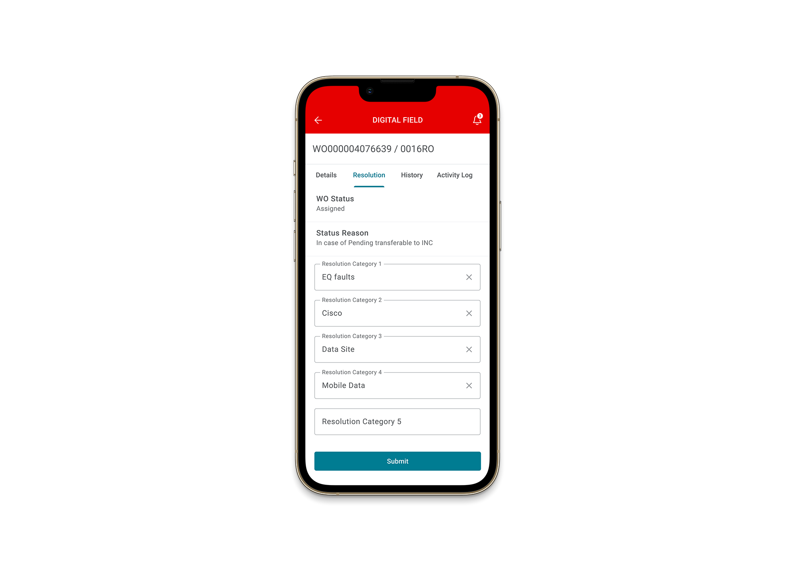

A design system built to end the debate.
As Product Designer, I led a structured evaluation of five design systems — Ant, Carbon, Fluent, Material and MUI — against Vodafone's own component library, then facilitated a workshop with developers and the client to turn a recurring, subjective style debate into one technical decision. Material Design was selected for its balance of consumer-app flexibility and enterprise-level customization. The result became the foundation for Digital Field, a field-operations app built for Vodafone Romania to manage antenna issues and ticket closures — shipped in both light and dark themes.

A decision nobody could close.
Vodafone already had its own component library, but styling decisions kept being reopened without a technical reference point to settle them. Every round of feedback restarted the same subjective conversation, slowing down delivery on the products being built on top of it — including the app that would become Digital Field.
- 16
- core UI components without one shared reference
- 5
- alternative design systems on the table
- 0
- technical criteria being used to settle the debate
Key Decision #1
Comparing five systems, one component at a time.
Instead of arguing about style in the abstract, we benchmarked Vodafone's existing components against five established design systems — Ant Design, Carbon Design, Fluent Design, Material Design and MUI — across 16 core UI elements: Button, Radio Button, Chips, Switch, Checkbox, Breadcrumbs, Dropdown, Input/Note, Data Table, Calendar, Tooltip, Alert, Icon, Modal, Pagination and Stepper. The comparison became the base for a workshop with both the development team, to validate technical feasibility, and the client, to walk through the trade-offs of each system in detail.
- 5 design systems benchmarked — Ant, Carbon, Fluent, Material, MUI
- 16 core components compared side by side
- 2 audiences in the workshop — developers and client

Key Decision #2
Material, chosen on its own trade-offs.
Material Design was selected for being flexible and consumer-friendly while still adaptable to enterprise needs through customization — the best fit for both Vodafone Mobile and Digital Field. It came with a known limitation: no built-in data visualization components, requiring integration with external charting libraries. That trade-off was made openly, in the workshop, rather than discovered later. After the decision was shared and agreed with the client, style change requests stopped.
- 1 known trade-off accepted openly — no built-in data visualization
- 1 shared decision, reached with the client in the room
- 0 style change requests after the decision was shared
Key Decision #3
From decision to Digital Field.
The new design system became the foundation for Digital Field, a field-operations app built for Vodafone Romania to help operators manage problematic antenna issues and close tickets from the field. Built by a team of three designers given its complexity, it shipped in both light and dark versions.


- 3 designers on the build, given its complexity
- 2 theme variants shipped — light and dark
- 1 country in active use — Romania field operations
The work behind the decision.
- 5
- design systems evaluated against Vodafone's own components
- 16
- core UI components benchmarked across all five systems
- 2 weeks
- workshop to move the decision from opinion to evidence
- 0
- style change requests reopened after the decision was shared
- Shipped
- in production on Digital Field, in both light and dark themes